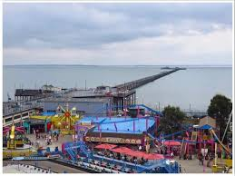

ScreenFreeSummers
ScreenFreeSummers
5 Budget-Friendly Day Trips from London for Families
Published July 2025
Looking for a fun, affordable way to escape the city this summer with the kids? Here are five top day trip ideas from London that are under 90 minutes away — perfect for a screen-free day out that won't stretch the budget.
🚂 1. Southend-on-Sea (Essex)
With its sandy beach, lively seafront, and classic pier, Southend is the perfect mix of old-school seaside fun and family friendly entertainment.
- Getting there: Trains from Stratford or Liverpool Street, around 1 hour. ~£20 return
- Highlights: Adventure Island amusement park (pay-per-ride), free beach access, fish & chips, arcades, and the world’s longest pleasure pier
- Budget tip: Pack a picnic and spend time on the beach — it's free!
🌳 2. Epping Forest (East London/Essex Border)
Just a short hop from central London, Epping Forest is great for families who love nature. There are miles of walking trails, bike paths, and hidden ponds to explore.
- Getting there: Central Line to Loughton or Chingford
- Highlights: Nature trails, picnicking, wildlife spotting, High Beach Visitor Centre
🏰 3. St Albans (Hertfordshire)
This historic town is filled with Roman ruins, a stunning cathedral, and leafy parks perfect for a slower paced day out with a bit of history thrown in.
- Getting there: Thameslink train from St Pancras (under 30 mins)
- Highlights: Verulamium Park, Roman Mosaic, St Albans Cathedral
- Budget tip: Most attractions are free or donation-based!
🐾 4. Forty Hall Estate (Enfield)
This hidden gem in North London offers a historic manor house, walled gardens, and woodland trails — all completely free to visit.
- Getting there: Overground to Enfield Town, short walk or bus
- Highlights: Free entry to house and gardens, café, kids trails
🏖 5. Ruislip Lido (West London)
A beach in London? Yes! Ruislip Lido offers a sandy beach, a small lake, and a fun miniature railway great for young kids.
- Getting there: Metropolitan Line to Ruislip, then bus or 20-minute walk
- Highlights: Splashing in the water, beach games, lido café, woodland walks
Tips for Day-Trip Planning
- Always check travel prices in advance — look for off-peak or family railcard savings
- Bring reusable water bottles, snacks, and a picnic if possible
- Check local council or venue websites for free events
Budget friendly doesn't mean boring! These nearby destinations prove you don’t need to travel far or spend a fortune for a fun-filled family summer day out.